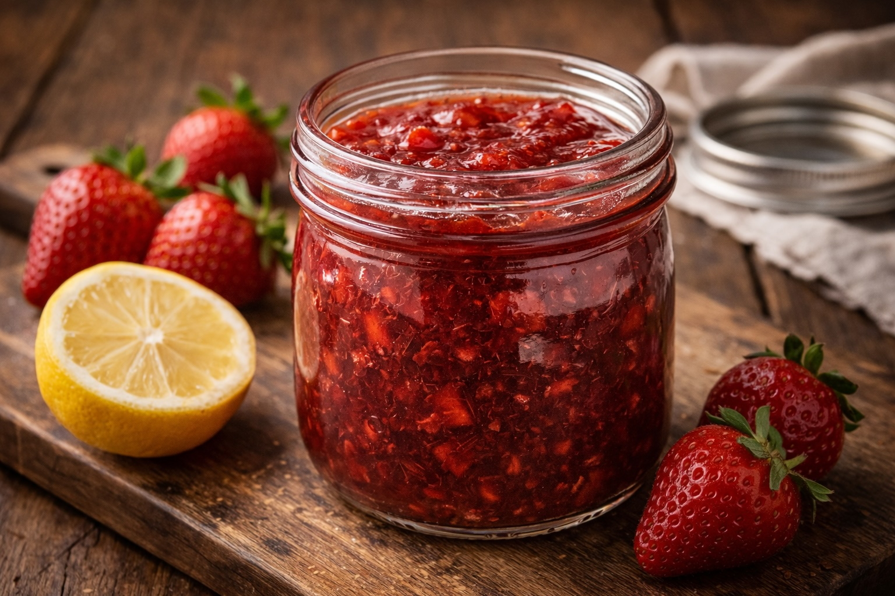

Insights · Food · Whole Foods Recipes
Whole Foods Recipes: Homemade Strawberry Jam
Last updated: February 26, 2026

You do not need commercial mixes or complicated canning systems to make excellent jam. Strawberries, sugar, and lemon are enough.
Purpose: Create a simple refrigerator jam using only whole ingredients — no preservatives, no pectin packets, and no unnecessary additives — while keeping the process approachable for everyday use.
Ingredients
- 2 cups fresh strawberries, chopped (about 10–12 medium strawberries)
- ¼ to ⅓ cup white sugar (start lower, adjust to taste)
- 1–2 teaspoons fresh lemon juice
- Optional: pinch of salt (brightens flavor)
Equipment
- Small saucepan
- Wooden spoon
- Knife & cutting board
- Clean ~11 oz glass jar with lid
No pectin, thermometer, or canning setup needed for this refrigerator version.
Total time
- Prep: ~10 minutes
- Cook: ~15–20 minutes
- Cool & set: 1–2 hours (thickens as it cools)
Steps
1) Prep the strawberries
Wash, hull, and chop strawberries into small pieces. Smaller pieces create a smoother “classic” jam texture with less work later.
2) Combine and rest (optional but helpful)
Add strawberries and sugar to the saucepan and stir. If you have time, let it sit 5–10 minutes so the berries release juice (this makes cooking easier and more even).
3) Simmer gently
Bring to a gentle simmer over medium heat, then reduce to medium-low. Stir occasionally at first, then more often as it thickens. Lightly mash with the back of a spoon as you go.
4) Add lemon and finish thickness
Add lemon juice mid-cook. Continue simmering until the bubbles slow down and look “heavier,” and the mixture coats the spoon. A simple check: drag a spoon across the bottom of the pan — if it leaves a trail that stays open briefly before closing, it’s ready.
5) Cool and store
Let cool slightly, transfer to a clean jar, then refrigerate. The jam will continue to set as it cools.
Storage
Refrigerate and use within 7–10 days. No preservatives means shorter shelf life — by design. If you see mold or smell fermentation, discard.
Notes for classic texture
- Use white sugar for clean strawberry flavor and bright color. Brown sugar changes taste and darkens the jam.
- Don’t overcook. Overcooking shifts the flavor toward caramel and dulls the fresh strawberry profile.
- Want it smoother? Mash more aggressively, or use an immersion blender for a few seconds (optional).
Family reaction
Fresh strawberry jam on warm homemade bread is difficult to compete with.
Next steps
Continue with more Whole Food Cooking.
This article focuses on general food quality and cooking with quality ingredients, not medical advice.